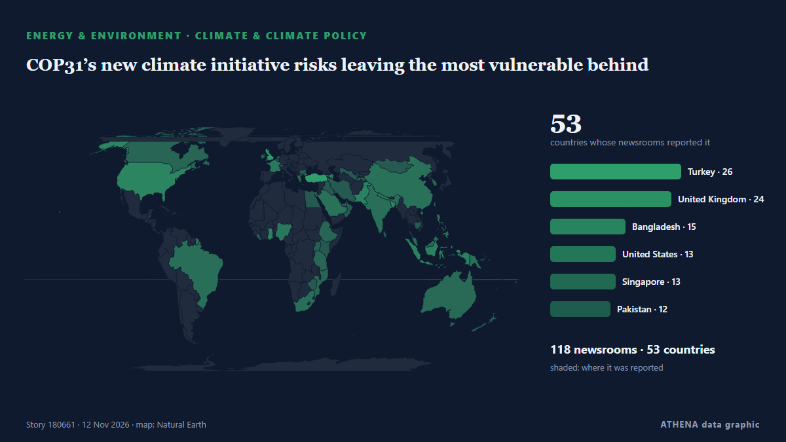

Ενέργεια, Πόροι & Περιβάλλον
ΧορηγούμενοΠαρουσιάζεται από  Cybernetics and Artificial Intelligence Lab Welcome to the Cybernetics and Artificial Intelligence Laboratory, established at the Department of Business Administration of the National and Kapodistrian University of Athens. The lab is headed by Professor Dimitrios Thomakos. The lab aims to do research that can be published in top venues. Our research uses tools and methods of Artificial Intelligence, and lies in the following areas: - Forecasting - Decision making - Cyber security - Finance We are always looking forward to collaborating with exceptional students!
Cybernetics and Artificial Intelligence Lab Welcome to the Cybernetics and Artificial Intelligence Laboratory, established at the Department of Business Administration of the National and Kapodistrian University of Athens. The lab is headed by Professor Dimitrios Thomakos. The lab aims to do research that can be published in top venues. Our research uses tools and methods of Artificial Intelligence, and lies in the following areas: - Forecasting - Decision making - Cyber security - Finance We are always looking forward to collaborating with exceptional students!
Οι τίτλοι των ειδήσεων παρουσιάζονται στα αγγλικά, όπως δημοσιεύτηκαν.

Κλίμα & κλιματική πολιτικήCOP31’s new climate initiative risks leaving the most vulnerable behind
Civil society groups from Bangladesh, Bhutan and Nepal call for predictable, grant-based adaptation funding. από The Business Standard (Bangladesh) (working feed)
| 30 Οκτ | 94 |
|---|---|
| 31 Οκτ | 39 |
| 1 Νοε | 55 |
| 2 Νοε | 121 |
| 3 Νοε | 93 |
| 4 Νοε | 99 |
| 5 Νοε | 96 |
| 6 Νοε | 60 |
| 7 Νοε | 47 |
| 8 Νοε | 56 |
| 9 Νοε | 107 |
| 10 Νοε | 101 |
| 11 Νοε | 84 |
| 12 Νοε | 33 |
Iran wants compensation for environmental damage from US-Israeli strikes
'We expect the global community to establish a genuine and meaningful link between climate commitments in times of peace and responsibility in times of war,' says Iran's President Masoud Pezeshkian. από Rappler
Scientists predict 2026 hottest year on record as COP31 summit begins
By Nana Karikari, Senior Global Affairs Correspondent The world is on course for its hottest year in recorded history as the planet is hit with warming from climate change and El Niño. από GBC Ghana Online
ADNOC widens its Asian footprint with decade-long LNG offtake deal
French energy giant TotalEnergies has signed a heads of agreement with Jiangsu Guoxin Group, a major energy company in China's Jiangsu province, to deliver 900,000 tons of LNG per year. από LNG Prime
Turkey, Saudi Arabia sign pact for 3,000 MW of wind power projects
Turkey and Saudi Arabia on Tuesday signed a pact for 3,000 megawatts of wind power projects in Turkey, the second phase of an agreement with Saudi energy company ACWA Power, the state-run Anadolu… από Turkish Minute
President Barzani, Guterres urge regional peace at COP31
Shafaq News- Antalya Kurdistan Region President Nechirvan Barzani and UN Secretary-General António Guterres stressed the importance of maintaining regional stability and resolving disputes through… από Shafaq News (English)
Mayfair substation: Power restoration expected this afternoon
Isaac Mangena says teams have been working around the clock to restore electricity. από SABC News
Erdogan meets Bosnia-Herzegovina presidency members at COP31 in Antalya
In the evening, Tarique Rahman will attend a dinner hosted by Turkish President Recep Tayyip Erdogan in honour of world leaders attending the summit. από The Business Standard (Bangladesh) (working feed)
Greta Thunberg warns 'everything we love is at stake' as she arrives at UN climate talks
ANTALYA, Turkey (AP) -- Climate activist Greta Thunberg arrived at U.N. climate talks on Tuesday, condemning the annual proceedings as hypocritical an. από Mainichi (English)
UN chief urges world to end fossil fuel addiction at COP31
UN chief António Guterres called for a new global climate justice agreement at COP31 on Wednesday, urging governments to tax fossil fuel companies to help countries bearing the brunt of a crisis they… από UN News
ExxonMobil launches legal challenge to EU carbon capture rules
US oil company invokes investment treaty to challenge Brussels’ green regulations and seek suspension of timing requirements. από Financial Times - Markets
Climate action must continue even if 'US is not here', Pacific leaders say
The United States government has no official presence at the climate talks in Türkiye, marking the second consecutive year the Trump administration has skipped the annual summit. από RNZ Pacific
Iran will not allow enriched nuclear material to leave the country, security chief says
Dubai: Tehran will not allow even a single particle of enriched nuclear material to leave the country, Iran's security chief Mohsen Rezaei said in an interview with Lebanon's pro-Iranian Al Mayadeen… από Deccan Herald
Iran president accuses US, Israel of causing environmental damage during war
Iranian President Masoud Pezeshkian accused the United States and Israel of inflicting severe environmental damage during attacks on the Islamic republic, in his speech on Wednesday at the UN Climate… από The Korea Times
India pollution monitors overwhelmed by toxic smog
India’s air pollution monitors were overwhelmed this week by toxic smog so severe that concentrations exceeded their upper measurement limit, equivalent to 66 times the World Health Organisation’s… από Dawn
Government, parliament launch separate probes into Jurf al-Sakhr smuggling
Shafaq News- Baghdad (Updated at 19:30) Iraq's government and parliament have each moved to investigate reports of oil smuggling in Jurf al-Sakhr (Jurf al-Nasr), forming separate committees days… από Shafaq News (English)
Gas prices fall below $4 per gallon for the first time since July
The national average for the cost of gas dropped to less than $4 per gallon on Tuesday for the first time since July, as prices soared in the months following the start of the Iran war. από The Hill
Portugal on alert as Storm Charles heads towards the mainland
Mainland Portugal is under a state of alert today, Wednesday, 11 November, as Storm Charles moves towards the country after bringing strong winds to Madeira. από The Portugal News
Planet One opens new exploration frontier with offshore Ghana hydrocarbon discovery
Planet One Oil & Gas has announced the discovery of hydrocarbons at its Nya Gyidie-1X exploration well in the Deepwater Cape Three Points (DWCTP) Block offshore Ghana. από MyJoyOnline
NAHCON, Saudi Arabia sign 2027 Hajj agreement
The fourth conference of the Working Group of the Defence and Security Committee of the Greece–Saudi Arabia Supreme Council for Strategic Cooperation has been successfully concluded. από Naftemporiki (English)
Delhi air quality deteriorates, AQI settles at 303
New Delhi: Delhi's air quality worsened to 'very poor' on Wednesday, with the AQI settling at 303, the Central Pollution Control Board (CPCB) data showed. από Deccan Herald
El Niño looms over Colombia's battle with fire-prone plant
Colombian farmer Albert Montano razes a beautiful thorny shrub, fearful that its yellow flowers will fuel potent wildfires expected during the El Niño weather pattern. από Phys.org
ExxonMobil Takes First Step Toward Venezuela Oil Return
ExxonMobil said on Monday it signed a memorandum of understanding with Venezuelan state oil company PDVSA to assess upstream oil opportunities, marking a potential return to the country nearly two… από MarineLink
Oil prices are so high that CO2 emissions from fossil fuels are dropping
It's not quite a victory for humanity's transition to renewables. από Science News
UNICEF says Israel blocks Gaza basin repairs, warns of flood risk
GENEVA: The UN children's agency said Israel had rejected the importation of equipment needed to repair a water basin in Gaza, and warned that the facility could overflow and endan... από Oman Observer
Oil rises from two-month low as Hormuz shipping attacks offset Iran truce hopes
BEIJING: Oil prices rose on Wednesday after falling to two-month lows in the previous session, as the market swung between hopes for a de-escalation in the Iran war and concerns about ongoing… από Business Recorder
Brent Crude Falls Below $90 for First Time Since August
Brent Crude prices plunged to below $90 per barrel early on Tuesday, falling below that threshold for the first time since August, as U.S. από OilPrice.com
Ukrainian strikes cut Russia's oil refining capacity by 30%, Reuters reports
Over the past week, Ukrainian attacks disrupted operations or caused emergency situations at nine of Russia's 35 major refineries, according to Reuters. από Kyiv Independent
Oil Price Falls Below $90 First Time in 4 Months as Trump Signals Iran De-escalation
• Development portends mixed fortunes for Nigeria Emmanuel Addeh in Abuja Nigeria’s crude benchmark, Brent, fell below the $90 per barrel threshold yesterday for the first time since August, as. από ThisDay (Nigeria)
Iran urges UN, IAEA to condemn US offer of $20M for nuclear information
Foreign minister warns US initiative could encourage espionage, endanger nuclear scientists and undermine IAEA safeguards. από Anadolu Agency (English)
Greek inflation accelerates to 5.7% in October as natural gas prices surge 80%
Inflation in Greece rose to 5.7% in October, driven by sharp increases in energy, housing and transport costs. από ProtoThema English
Saudi Arabia says East-West oil pipeline targeted in Medina, operations unaffected
RIYADH: The East-West pipeline in the Madinah region was targeted on Monday and the incident resulted in a limited fire which emergency teams extinguished, Saudi Arabia’s energy ministry reported. από Arab News
Bureau Veritas upgrades VeriSTAR Green emissions platform
Bureau Veritas Marine & Offshore has launched an upgraded version of its VeriSTAR Green platform. από Container News
Oil Prices Plunge Below $92 as Trump Signals Restraint on Iran
Crude oil prices dropped to less than $92 per barrel for Brent and $86 for WTI following reports citing President Trump as not planning to attack Iran “at this point”. από OilPrice.com